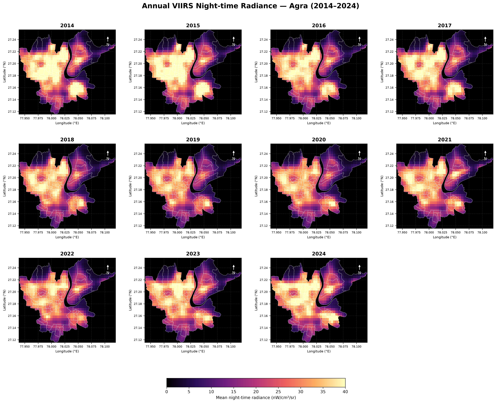
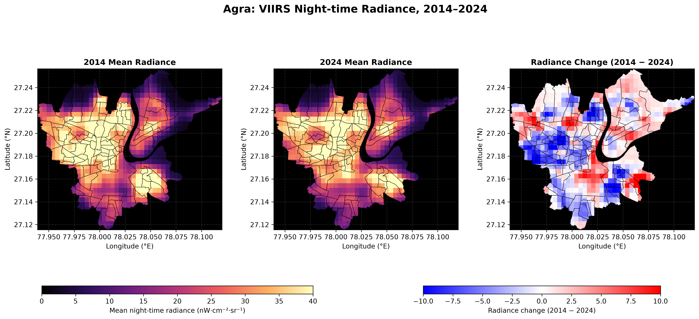
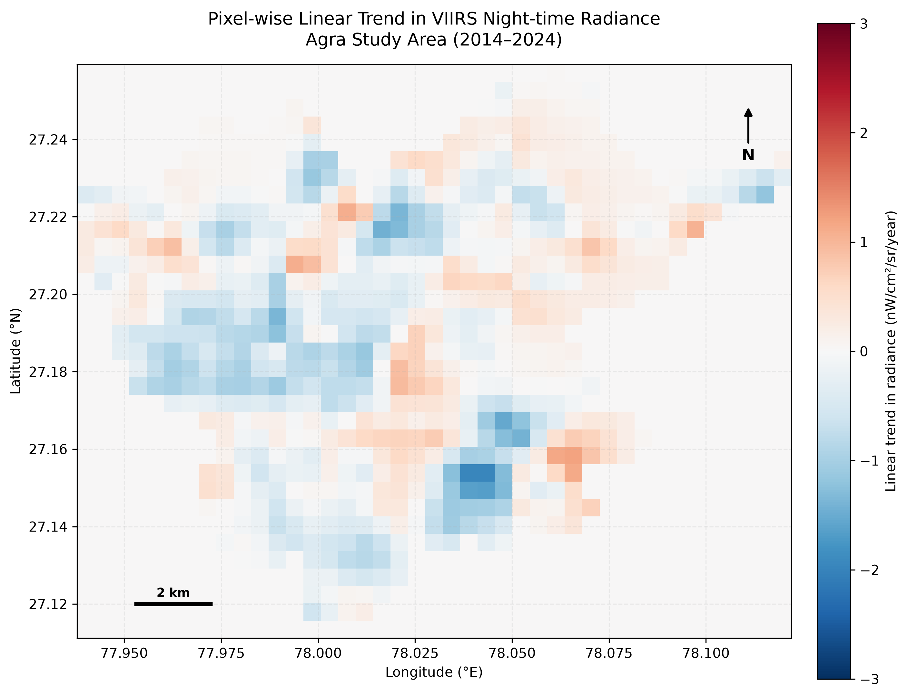
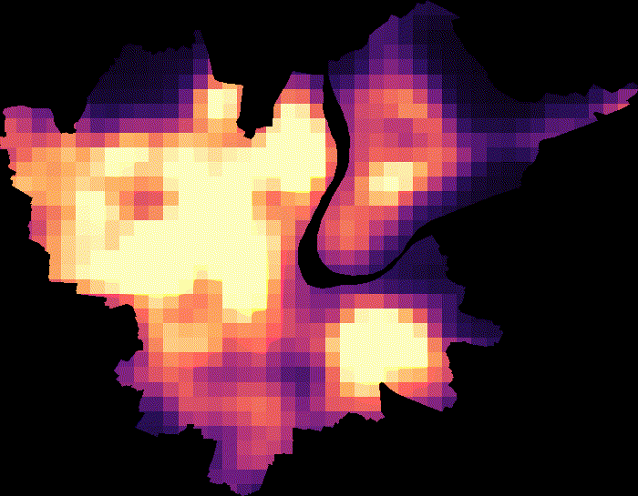

How did observed night-time radiance change?
This project examines temporal variation in satellite-observed night-time radiance across the available Agra ward-based study area. Monthly VIIRS observations are aggregated into annual mean surfaces to visualise spatial patterns and changes between 2014 and 2024.
Annual VIIRS radiance maps
The panels use a consistent radiance colour scale to make year-to-year spatial patterns easier to compare.


Pixel-wise trend across the study period
Pixel-wise trend maps summarise the direction and spatial distribution of radiance trends across the study area. Interpret individual locations using each map’s legend.


Radiance patterns through time
The animation provides a visual sequence of annual radiance surfaces across the 11-year period.

Annual mean radiance trends
Explore annual mean VIIRS night-time radiance across the Agra study area from 2014 to 2024. Hover over the graph to inspect values.
Line graph — change over time
Bar graph — yearly comparison
Source: annual mean radiance statistics shown in the table below. Charts require an internet connection to load Chart.js.
Annual mean radiance statistics
Annual spatial mean radiance values for the study period, in nW/cm²/sr.
| Year | Annual mean radiance (nW/cm²/sr) |
|---|---|
| 2014 | 24.737910 |
| 2015 | 24.965490 |
| 2016 | 22.895297 |
| 2017 | 23.483370 |
| 2018 | 21.738757 |
| 2019 | 20.644503 |
| 2020 | 20.737805 |
| 2021 | 22.237782 |
| 2022 | 21.236421 |
| 2023 | 23.211848 |
| 2024 | 24.450545 |
2014–2024 absolute change: −0.287365 nW/cm²/sr. Percentage change relative to 2014: approximately −1.16%.
Data and processing workflow
- Satellite dataset: NOAA VIIRS DNB monthly night-time lights collection,
NOAA/VIIRS/DNB/MONTHLY_V1/VCMSLCFG. - Radiance variable:
avg_rad. - Temporal aggregation: monthly observations were aggregated to annual mean radiance surfaces for 2014–2024.
- Spatial analysis: annual surfaces were examined across the available ward-based Agra study boundary; pixel-wise linear trends were mapped over the period.
- Visualisation: annual maps, a change map, trend maps, an animation, and a table of annual spatial means were prepared.
Dataset documentation: Google Earth Engine — NOAA VIIRS DNB Monthly V1.
Interpretation and caveats
Key findings
- The annual mean radiance was 24.737910 nW/cm²/sr in 2014 and 24.450545 nW/cm²/sr in 2024, a net decrease of approximately 1.16%.
- The lowest annual mean in this series occurred in 2019 (20.644503 nW/cm²/sr).
- Mean radiance increased again after 2019, reaching 24.450545 nW/cm²/sr in 2024.
- The annual mean describes an overall spatial summary; local areas can show different trends, as illustrated by the pixel-wise maps.
Limitations
- The study boundary is ward-based and consists of multiple polygon parts; it should not be interpreted as an independently verified official municipal boundary without additional validation.
- Night-time radiance is a satellite-observed proxy for artificial light, not a direct measure of population, economic activity, electricity consumption, or urban development.
- Results can be affected by sensor characteristics, atmospheric conditions, stray light, temporary lighting, and the chosen spatial boundary and aggregation method.
- Map-level interpretation should use the colour bars, units, and legends embedded in the supplied outputs.